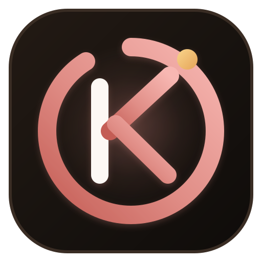

Kaizen (改善)Kaizen (改善) is the Japanese philosophy of continuous, incremental improvement. Instead of trying to radically transform everything overnight, Kaizen is built around getting 1% better every single day through disciplined, focused execution.
If you improve by just 1% every day for a year: (1.01)³⁶⁵ = 37.78x. You become nearly 38 times better by the time your target exam or major life goal arrives.
Kaizen combines long-term strategic roadmaps with high-focus daily task execution across three temporal dimensions: Day (Deep Focus), Week (Priority Sprints), and Month (High-Level Targets).
Visual contribution grid showing 90 days of study momentum. Tracks your active streak, all-time best streak, and total focus hours logged. Click any square to jump directly to that date.
Configurable deep work timer (5–90m focus, short/long breaks). Includes zero-dependency synthesizer bell chime and dynamic tab countdown title (24:45) Kaizen.
Type @10:30am or @15:00 in any task to create an automatic time reminder. Background scanner fires native browser notifications when tasks are due.
Click "Spaced Revision" on any subject or chapter to automatically schedule revision milestones on Day +1, Day +3, and Day +7.
Type hashtags like #Physics, #Math, #Revision to auto-badge tasks with pastel tags. Click any tag to instantly filter your agenda.
Search across days, weeks, months, or years. Live multi-field search scans task titles, subtask checklists, and full study notes with 0ms latency.
Click the expand arrow (▼) on any task to unlock its full depth:
🍅 Focus inside any task to dedicate a Pomodoro focus block directly to that specific topic.Swipe left or right anywhere on your phone screen to seamlessly flip dates:
Provides subtle physical vibration clicks (navigator.vibrate) on Android and mobile devices whenever you complete tasks, check subtasks, or finish timers.
Tap the microphone button $\rightarrow$ speak your task $\rightarrow$ Kaizen automatically transcribes and adds the task hands-free using the Web Speech API.
Kaizen is engineered so that you never lose tasks or study plans, even if you clear browser cookies or lose internet connection:
| Tier | Storage Mechanism | Protection Level |
|---|---|---|
| Tier 1 | localStorage + sessionStorage (Dual-Key) |
Instant synchronous client-side caching. |
| Tier 2 | IndexedDB (TaskPlannerDB) |
Binary resilient storage immune to standard cookie wipes. |
| Tier 3 | navigator.storage.persist() |
Requests OS-level browser disk protection against eviction. |
| Tier 4 | Firebase Firestore Cloud Sync | 2-way real-time multi-device sync via Google Auth or Secret Sync Passcode. |
| Tier 5 | Pre-Unload Lifecycle Flush | Auto-commits active input fields before page close or tab refresh. |
Click "📥 Export & Download (TXT / PDF / JSON)" in the footer to access your download hub:
[✓] / [ ]), study notes, and checklists. Works seamlessly on Windows Notepad, Mac TextEdit, and mobile note apps.| Shortcut | Function | Description |
|---|---|---|
| N | New Task | Focuses the task input field immediately. |
| T | Jump to Today | Resets view directly to today's date. |
| 1 / 2 / 3 | Day / Week / Month | Toggles between Daily, Weekly, and Monthly planning views. |
| J / ← | Previous Date | Shifts back 1 day/week/month (or Swipe 👉). |
| K / → | Next Date | Shifts forward 1 day/week/month (or Swipe 👈). |
| P | Pomodoro Focus | Starts or pauses the deep work timer. |
| E or / | Master Explorer | Opens All-Tasks archive and multi-temporal search. |
| H | Heatmap & Stats | Opens 90-day study heatmap and streak dashboard. |
| S | Share Plan | Generates direct shareable snapshot link. |
| ? | Shortcuts | Opens keyboard cheatsheet modal. |
| Enter | Save / Add | Adds task, subtask, or commits inline title edit. |
| Esc | Cancel / Close | Closes open dialog modals or cancels active edit. |
To publish Kaizen online live to your custom domain with full Firebase Firestore Cloud Database integration:
cd D:\Kshetriva_farms\HiddenWavefirebase deployOr to deploy only hosting assets:
firebase deploy --only hostingOnce deployed, your app is live worldwide with full SSL, global CDN edge caching, and real-time cloud sync at:
🔗 Live Production URL: https://hiddenwave.in/kaizen (or /planner)